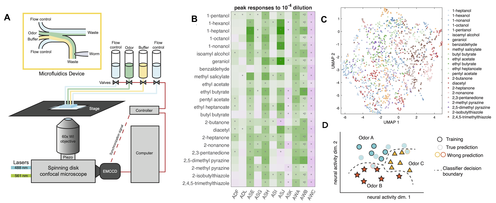
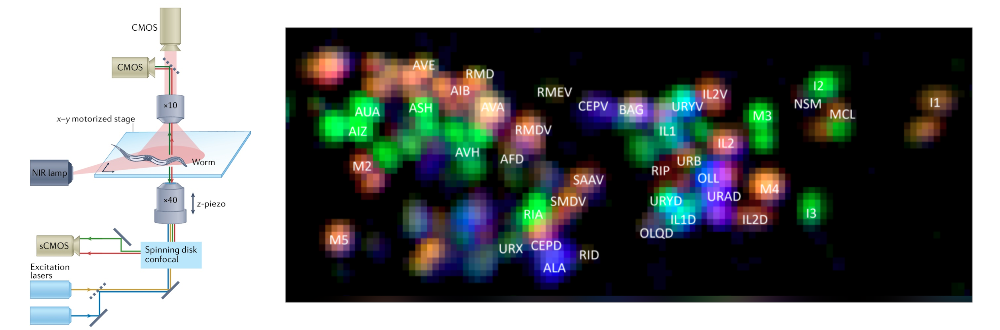
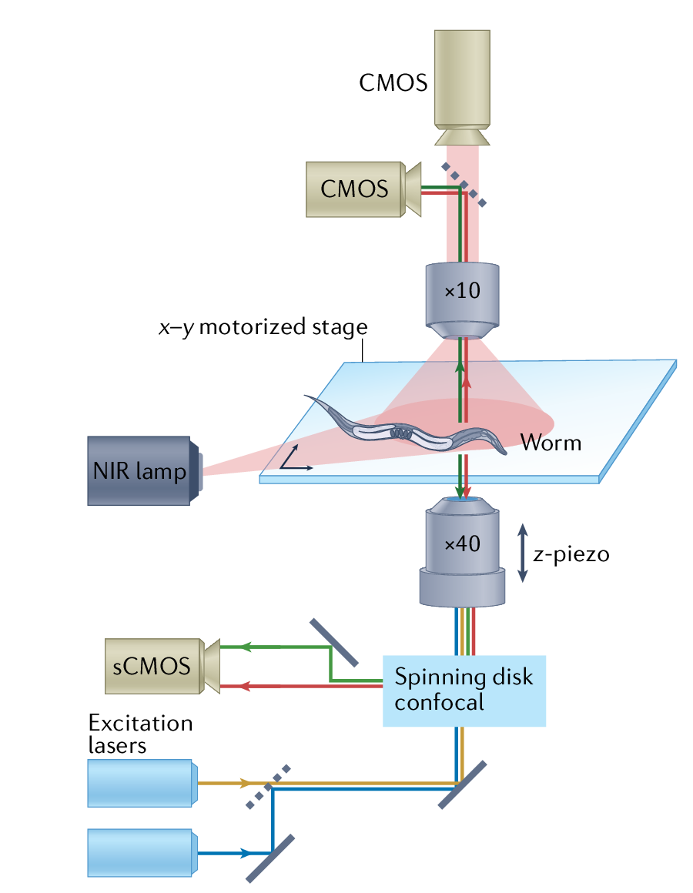
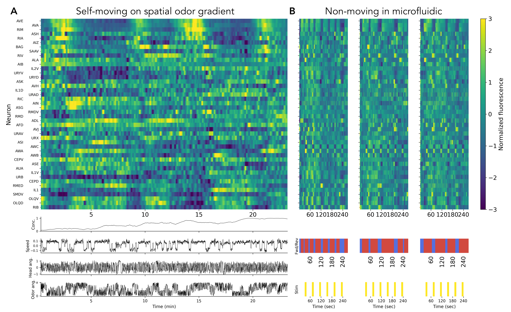
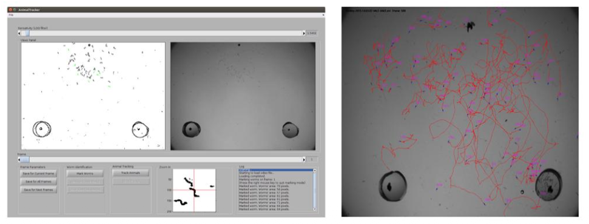
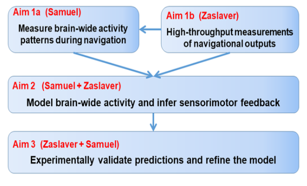

https://bit.ly/NSFBSF
NSF-BSF Collaboration
Closed-loop neural circuit dynamics in C. elegans
Aravi Samuel, Harvard & Alon Zaslaver, Hebrew University
How does a complete nervous system transform distributed olfactory input into adaptive navigation?
How is the connectome linked to population dynamics in the context of closed-loop integration between sensory coding and motor feedback?
Samuel and Zaslaver labs:
Multi-neuronal representations of diverse odors

Samuel lab:
brain-wide calcium imaging of freely-navigating animals

Samuel lab:
brain-wide calcium imaging of freely-navigating animals

Samuel lab:
brain-wide calcium imaging of freely-navigating animals

Zaslaver lab: High-throughput multi-animal tracking

Complementary integration
